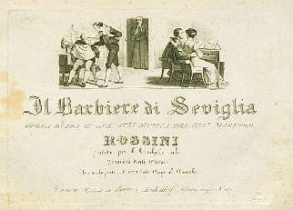
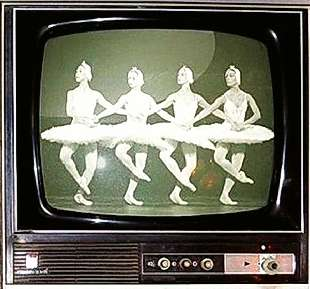

Борис Акунин
Мой календарь
Разумеется, каждый день нашей жизни должен быть днем музыки, но 20 февраля - в квадрате.
Это двойная годовщина.
В 1816 году состоялась премьера самой любимой оперы всех времен и народов, «Севильского цирюльника».
В 1877 году - самого знаменитого балета, «Лебединое озеро».
Кто не придает мистического значения совпадениям, тот живет скучно. Я придаю, и вам очень советую.
Видно, есть в 20 февраля нечто особенное, открывающее доступ к музыке сфер.
Просто плывите по этим волнам.
Если вам сегодня предстоит нечто, требующее мобилизации и удачи, начните утро с увертюры «Цирюльника», и всё получится. А закончите день спокойно, под «Белое адажио».
Если же день предстоит тихий, сделайте наоборот. И скажете двадцатому февраля спасибо.
В любом случае день, проведенный в пространстве между Главной Оперой и Главным Балетом, не может быть неудачным.